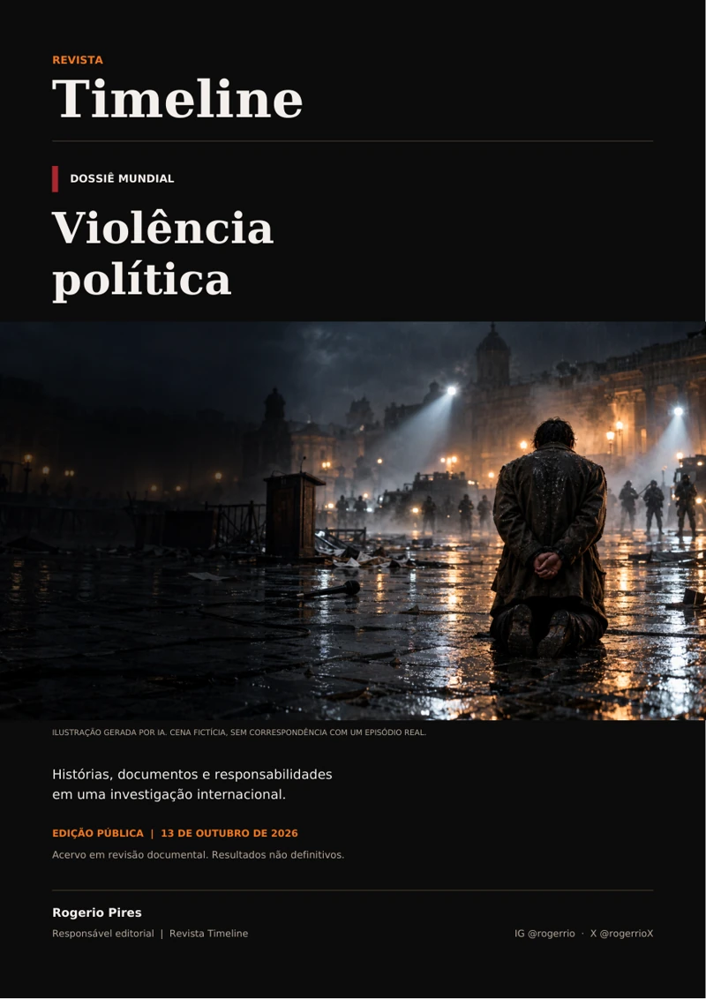

EDIÇÃO PARA GUARDAR E COMPARTILHAR
Baixe o dossiê
ilustrado.
Fichas, capítulos históricos, fontes e todas as imagens do Observatório, reunidos em uma edição com sumário clicável. Leia, examine os documentos e compartilhe a investigação.
Baixar o dossiê completoPesquisa em andamento. O PDF preserva as fontes, as ressalvas e o estado de revisão das fichas.
O OBSERVATÓRIO EM CIRCULAÇÃO
Carregando contadores…
Como contamos
Contagem iniciada em 13/10/2026, sem estimar acessos anteriores. Visitas são reunidas em sessões de 30 minutos desde o último carregamento, no mesmo navegador. Downloads registram cliques nos botões de baixar, não a conclusão do arquivo; acessos diretos ao PDF ficam fora dessa contagem. Sem o armazenamento local, recarregamentos podem ser contados separadamente.
Os totais são compartilhados entre os visitantes. A aplicação grava somente um identificador aleatório, o tipo de evento e o horário para evitar reenvios duplicados. Não grava nome, e-mail ou IP para os contadores.